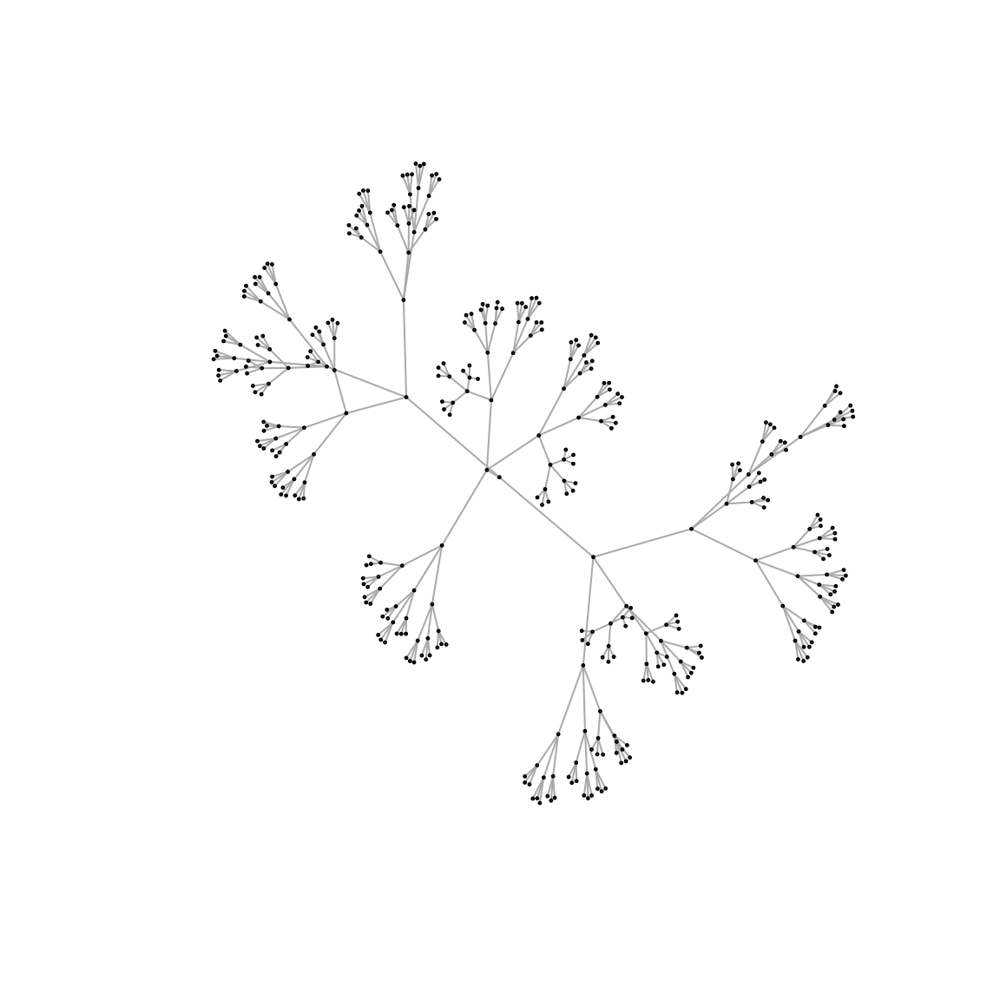
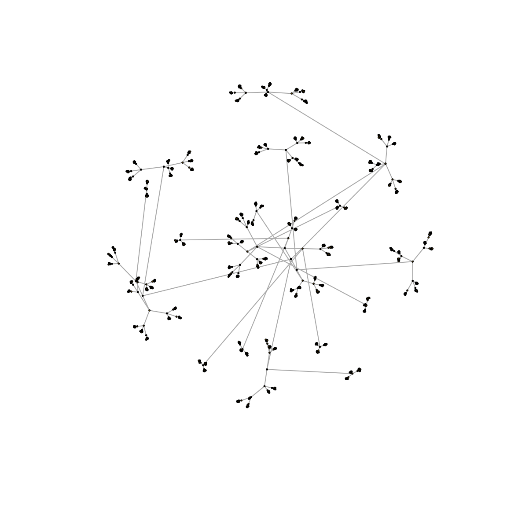

NetdisGPStepByStep.RmdThis vignette explains some inner calculations of Netdis-GP, which the user does not need to go through, however we explain them here for those users that may want to use Netdis in a modular fashion. Netdis-GP is a version of Netdis that uses the Polya-Aeppli/Geometric-Poisson approximation for the subgraph/graphlet count expectations.
For a simple Netdis-GP function call see instead “Simple and quick (default) usage 1: pairwise comparisons”.
For other vignettes in this package see the “Menu”.
(Extracted from Ali et al. (2014) and Ospina-Forero et al. (2018)): Netdis counts small subgraphs \(w\) on \(k\) nodes for all 2-step ego-networks, \(k=3,4,5\). These counts are centred by subtracting the expected number of counts \(E_w\). These centred counts of each network are then compared thus leading to the Netdis statistic.
In Netdis-GP, the expected number of counts \(E_w\) is computed independently for each graph based on a Geometric-Poisson (GP) approximation for the distribution of the number of occurrences of subgraph \(w\) in the respective graph. It assumes that \(N_{w,i} \sim GP(\lambda^{\rho(i)}_k, \theta^{\rho(i)}_w)\), where \(\lambda^{\rho(i)}_k\) is the Poisson parameter indexed by the size of subgraph \(w\) and the density bin \(\rho(i)\); and where \(\theta^{\rho(i)}_w\) is the geometric parameter indexed by subgraph \(w\) and density bin \(\rho(i)\). \(E_w(G, \rho(i))\) is taken as the mean of the GP approximation, i.e. \(\lambda^{\rho(i)}_k/\theta^{\rho(i)}_w\). As \(\lambda^{\rho(i)}_k\) and \(\theta^{\rho(i)}_w\) are not known, they are estimated as follows:
Let \(x_{w,d}^j\) be the number of subgraphs \(w\) on the 2-step ego-network \(j\) of density bin \(d\), and let \[ \bar{X}_{w,d}=\frac{1}{q} \sum_{j=1}^q x_{w,d}^j, \qquad V^2_{w,d}=\frac{1}{q-1} \sum_{j=1}^q (x_{w,d}^j - \bar{X}_{w,d})^2 , \] where \(q\) is the number of ego-networks in density bin \(d\). Then, \[ \hat{\lambda}^{d}_{k}= \frac{1}{l} \sum_{h \in A(k)} \frac{2 (\bar{X}_{h,d})^2}{V^2_{h,d}+\bar{X}_{h,d}} , \qquad \hat{\theta}^{d}_w= \frac{2\bar{X}_{w,d}}{V^2_{w,d}+\bar{X}_{w,d}}, \] where \(l\) is the number of connected subgraphs of size \(k\), for example, \(l=6\) for \(k=4\). These estimators are based on the moment estimators of a GP random variable and the proposal made by Picard et al.(2008), where the total count of each individual subgraph could be thought as the sum of the total subgraph counts over multiple ``clumps’’ of edges that appear across the network.
This variant focuses on detecting more general and global discrepancies between the ego-network structures.
(Extracted from Ali et al. (2014)): Let \(N_{w,i}(G)\) be the number of induced occurrences of small graphs \(w\) in the 2-step ego network of vertex \(i\). Now, bin all 2-step ego-networks of network \(G\) according to their network density. Let \(E_w(G,\rho)\) be the expected number of occurrences of \(w\) in an ego-network whose density falls in density bin \(\rho\). For a given network \(G\) compute the centred subgraph counts as \[ S_w(G)=\sum\limits_{i }{\bigg (N_{w,i}(G)- E_w(G, \rho(i)) \bigg )}, \] where \(i\) is a node in \(G\) and \(\rho(i)\) the density bin of the 2-step ego-network of node \(i\).
Now, to compare networks \(G_1\) and \(G_2\), set \[ \displaystyle netD_2^S(k) = \tfrac{1}{ \sqrt{ M(k)} } \sum\limits_{w \in A(k)} \bigg ({ \tfrac{S_w(G_1) S_w(G_2)} {\sqrt{S_w(G_1)^2 + S_w(G_2)^2}} }\bigg ), \quad k=3,4, 5, \] where \(A(k)\) is the set of connected subgraphs of size \(k\), and where \(M(k)\) is a normalising constant so that \(netD_2^S(k)\in[-1,1]\). \(M(k)\) is equal to \[ M(k) = \sum\limits_{w \in A(k)} \left( \tfrac{ S_w(G_1)^2 }{\sqrt{S_w(G_1)^2 + S_w(G_2)^2}} \right) \sum\limits_{w \in A(k)} \left(\tfrac{ S_w(G_2)^2 } {\sqrt{S_w(G_1)^2 + S_w(G_2)^2}} \right) . \] The corresponding Netdis statistic is defined as \[Netdis(k)=netd_2^S(k)=\tfrac{1}{2}(1-netD_2^S(k)) \in [0,1].\] Small values of Netdis suggest higher `similarity’ between the networks. By default Netdis uses subgraphs on \(k=4\) nodes.
Generation of tree-like networks with 400 nodes and 1600 nodes.
# Create networks
set.seed(34)
gTree_1 <- igraph::as.undirected( make_tree(n = 20^2,children = 3) )
gTree_2 <- igraph::as.undirected( make_tree(n = 40^2,children = 3) )
plot(gTree_1,vertex.size=0.8,vertex.label=NA)
plot(gTree_2,vertex.size=0.8,vertex.label=NA)
Netdis uses some mostly internal parameters that define the size of the subgraphs/graphlets that are going to be used, as well as the length of the ego neighbourhood, the minimum size considered for the resulting ego-networks, and finally some parameters that control an ego-network binning function. By default, Netdis considers the following setup:
# Maximum subgraph size to calculate counts and netdis statistic for
max_subgraph_size <- 4
# Ego-network neighbourhood size
neighbourhood_size <- 2
# Minimum size of ego-networks to consider
min_ego_nodes <- 3
min_ego_edges <- 1
# Ego-network density binning parameters. Here, the minimum number of ego-networks per bin and the starting number of bins
min_bin_count <- 5
num_bins <- 100One of the first steps in Netdis is the extraction of all ego-networks in each of the query networks:
# Get ego-networks for query graphs
ego_1 <- make_named_ego_graph(gTree_1,
order = neighbourhood_size,
min_ego_nodes = min_ego_nodes,
min_ego_edges = min_ego_edges)
ego_2 <- make_named_ego_graph(gTree_2,
order = neighbourhood_size,
min_ego_nodes = min_ego_nodes,
min_ego_edges = min_ego_edges)
head(ego_1,n=2)
#> [[1]]
#> IGRAPH 1df2706 U--- 13 12 -- Tree
#> + attr: name (g/c), children (g/n), mode (g/c)
#> + edges from 1df2706:
#> [1] 1-- 2 1-- 3 1-- 4 2-- 5 2-- 6 2-- 7 3-- 8 3-- 9 3--10 4--11 4--12 4--13
#>
#> [[2]]
#> IGRAPH 61f1ce7 U--- 16 15 -- Tree
#> + attr: name (g/c), children (g/n), mode (g/c)
#> + edges from 61f1ce7:
#> [1] 1-- 2 1-- 3 1-- 4 2-- 5 2-- 6 2-- 7 5-- 8 5-- 9 5--10 6--11 6--12 6--13
#> [13] 7--14 7--15 7--16
head(ego_2,n=2)
#> [[1]]
#> IGRAPH e1910b3 U--- 13 12 -- Tree
#> + attr: name (g/c), children (g/n), mode (g/c)
#> + edges from e1910b3:
#> [1] 1-- 2 1-- 3 1-- 4 2-- 5 2-- 6 2-- 7 3-- 8 3-- 9 3--10 4--11 4--12 4--13
#>
#> [[2]]
#> IGRAPH 8e40848 U--- 16 15 -- Tree
#> + attr: name (g/c), children (g/n), mode (g/c)
#> + edges from 8e40848:
#> [1] 1-- 2 1-- 3 1-- 4 2-- 5 2-- 6 2-- 7 5-- 8 5-- 9 5--10 6--11 6--12 6--13
#> [13] 7--14 7--15 7--16Once the ego-networks are extracted, the subgraph counts for all ego-network are obtained for each network being compared:
# Subgraphs counts for ego-networks in query graphs
subgraph_counts_1 <- ego_to_graphlet_counts(ego_networks = ego_1, max_graphlet_size = max_subgraph_size)
subgraph_counts_2 <- ego_to_graphlet_counts(ego_networks = ego_2, max_graphlet_size = max_subgraph_size)
head(subgraph_counts_1)
#> N G0 G1 G2 G3 G4 G5 G6 G7 G8
#> [1,] 13 12 21 0 18 13 0 0 0 0
#> [2,] 16 15 27 0 33 17 0 0 0 0
#> [3,] 16 15 27 0 33 17 0 0 0 0
#> [4,] 16 15 27 0 33 17 0 0 0 0
#> [5,] 17 16 30 0 36 20 0 0 0 0
#> [6,] 17 16 30 0 36 20 0 0 0 0
head(subgraph_counts_2)
#> N G0 G1 G2 G3 G4 G5 G6 G7 G8
#> [1,] 13 12 21 0 18 13 0 0 0 0
#> [2,] 16 15 27 0 33 17 0 0 0 0
#> [3,] 16 15 27 0 33 17 0 0 0 0
#> [4,] 16 15 27 0 33 17 0 0 0 0
#> [5,] 17 16 30 0 36 20 0 0 0 0
#> [6,] 17 16 30 0 36 20 0 0 0 0For each ego-network, its edge density is obtained, then the ego-networks are binned according to their edge density. This process is repeated for each of the query networks:
# Get ego-network densities
densities_1 <- ego_network_density(graphlet_counts = subgraph_counts_1)
densities_2 <- ego_network_density(graphlet_counts = subgraph_counts_2)
# Adaptively bin ego-network densities
binned_densities_1 <- binned_densities_adaptive(densities = densities_1,
min_counts_per_interval = min_bin_count,
num_intervals = num_bins)
binned_densities_2 <- binned_densities_adaptive(densities = densities_2,
min_counts_per_interval = min_bin_count,
num_intervals = num_bins)
str(binned_densities_1)
#> List of 3
#> $ densities : num [1:400] 0.154 0.125 0.125 0.125 0.118 ...
#> $ interval_indexes: int [1:400] 2 2 2 2 1 1 1 1 1 1 ...
#> $ breaks : num [1:4] 0.118 0.12 0.25 0.4
str(binned_densities_2)
#> List of 3
#> $ densities : num [1:1600] 0.154 0.125 0.125 0.125 0.118 ...
#> $ interval_indexes: int [1:1600] 2 2 2 2 1 1 1 1 1 1 ...
#> $ breaks : num [1:5] 0.118 0.12 0.183 0.25 0.4With the ego-network binning obtained, the Geometric-Poisson approximation of the expected subgraph counts, \(E_w\), can be obtained for each subgraph \(w\) and each density bin:
binned_gp_subgraph_counts_1 <- density_binned_counts_gp(graphlet_counts = subgraph_counts_1,
density_interval_indexes = binned_densities_1$interval_indexes,
max_graphlet_size = max_subgraph_size)
binned_gp_subgraph_counts_2 <- density_binned_counts_gp(graphlet_counts = subgraph_counts_2,
density_interval_indexes = binned_densities_2$interval_indexes,
max_graphlet_size = max_subgraph_size)
binned_gp_subgraph_counts_1
#> G0 G1 G2 G3 G4 G5 G6 G7 G8
#> [1,] 16.000000 15.000000 0 9.325963 9.3466297 0 0 0 0
#> [2,] 7.311828 6.290323 0 4.681556 2.1441715 0 0 0 0
#> [3,] 4.000000 3.000000 0 0.000000 0.6666667 0 0 0 0
binned_gp_subgraph_counts_2
#> G0 G1 G2 G3 G4 G5 G6 G7 G8
#> [1,] 16.0 15 0 9.325963 9.3466297 0 0 0 0
#> [2,] 13.4 12 0 10.797819 4.3434837 0 0 0 0
#> [3,] 7.0 6 0 2.831504 2.8353938 0 0 0 0
#> [4,] 4.0 3 0 0.000000 0.6666667 0 0 0 0With \(E_w\) now obtained, Netdis-GP, can be compute as per its construction by first centring the observed counts:
# Calculate expected subgraph counts for each ego network
exp_gp_subgraph_counts_1 <- netdis_expected_counts(graphlet_counts = subgraph_counts_1,
density_breaks = binned_densities_1$breaks,
density_binned_reference_counts = binned_gp_subgraph_counts_1,
max_graphlet_size = max_subgraph_size,
scale_fn=NULL)
exp_gp_subgraph_counts_2 <- netdis_expected_counts(graphlet_counts = subgraph_counts_2,
density_breaks = binned_densities_2$breaks,
density_binned_reference_counts = binned_gp_subgraph_counts_2,
max_graphlet_size = max_subgraph_size,
scale_fn=NULL)
# Centre subgraph counts by subtracting expected counts
centred_subgraph_counts_1 <- netdis_subtract_exp_counts(graphlet_counts = subgraph_counts_1,
exp_graphlet_counts = exp_gp_subgraph_counts_1,
max_graphlet_size = max_subgraph_size)
centred_subgraph_counts_2 <- netdis_subtract_exp_counts(graphlet_counts = subgraph_counts_2,
exp_graphlet_counts = exp_gp_subgraph_counts_2,
max_graphlet_size = max_subgraph_size)
head(centred_subgraph_counts_1)
#> G0 G1 G2 G3 G4 G5 G6 G7 G8
#> [1,] 4.688172 14.70968 0 13.31844 10.85583 0 0 0 0
#> [2,] 7.688172 20.70968 0 28.31844 14.85583 0 0 0 0
#> [3,] 7.688172 20.70968 0 28.31844 14.85583 0 0 0 0
#> [4,] 7.688172 20.70968 0 28.31844 14.85583 0 0 0 0
#> [5,] 0.000000 15.00000 0 26.67404 10.65337 0 0 0 0
#> [6,] 0.000000 15.00000 0 26.67404 10.65337 0 0 0 0
head(centred_subgraph_counts_2)
#> G0 G1 G2 G3 G4 G5 G6 G7 G8
#> [1,] -1.4 9 0 7.202181 8.656516 0 0 0 0
#> [2,] 1.6 15 0 22.202181 12.656516 0 0 0 0
#> [3,] 1.6 15 0 22.202181 12.656516 0 0 0 0
#> [4,] 1.6 15 0 22.202181 12.656516 0 0 0 0
#> [5,] 0.0 15 0 26.674037 10.653370 0 0 0 0
#> [6,] 0.0 15 0 26.674037 10.653370 0 0 0 0After the counts are centred, the total count is computed for each subgraph in each query network:
sum_subgraph_counts_1 <- colSums(centred_subgraph_counts_1)
sum_subgraph_counts_1
#> G0 G1 G2 G3 G4 G5
#> 2.575717e-14 1.986000e+03 0.000000e+00 1.549577e+03 1.892727e+03 0.000000e+00
#> G6 G7 G8
#> 0.000000e+00 0.000000e+00 0.000000e+00
sum_subgraph_counts_2 <- colSums(centred_subgraph_counts_2)
sum_subgraph_counts_2
#> G0 G1 G2 G3 G4
#> -3.170797e-13 7.986000e+03 0.000000e+00 6.885435e+03 7.287418e+03
#> G5 G6 G7 G8
#> 0.000000e+00 0.000000e+00 0.000000e+00 0.000000e+00Finally, the total centred counts can be used to obtain the Netdis statistic:
netdis_result <- netdis_uptok(centred_graphlet_count_vector_1 = sum_subgraph_counts_1,
centred_graphlet_count_vector_2 = sum_subgraph_counts_2,
max_graphlet_size = max_subgraph_size)
print(netdis_result)
#> netdis3 netdis4
#> 0.000000000 0.001268919W. Ali, T. Rito, G. Reinert, F. Sun, and C. M. Deane. Alignment-free protein interaction network comparison. Bioinformatics, 30:i430–i437, 2014.
L. Ospina-Forero, C. M. Deane, and G. Reinert. Assessment of model fit via network comparison methods based on subgraph counts. Journal of Complex Networks, page cny017, August 2018.
A. E. Wegner, L. Ospina-Forero, R. E. Gaunt, C. M. Deane, and G. Reinert. Identifying networks with common organizational principles. Journal of Complex networks, 2017.
F. Picard, J.-J. Daudin, M. Koskas, S. Schbath, and S. Robin. Assessing the exceptionality of network motifs. Journal of Computational Biology, 15(1):1–20, 2008.